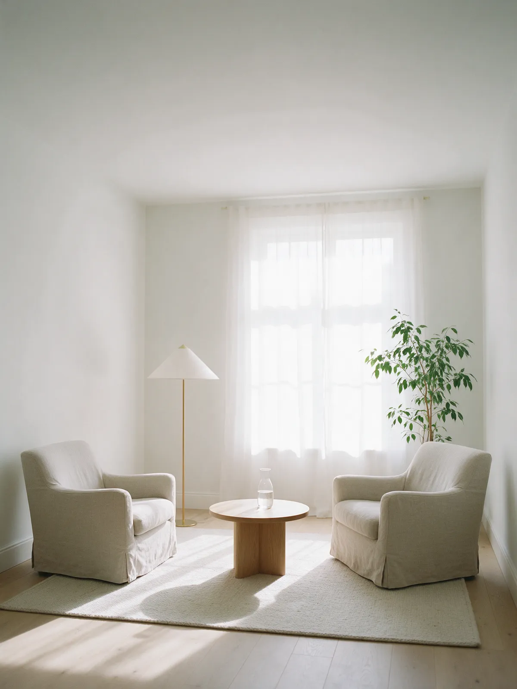
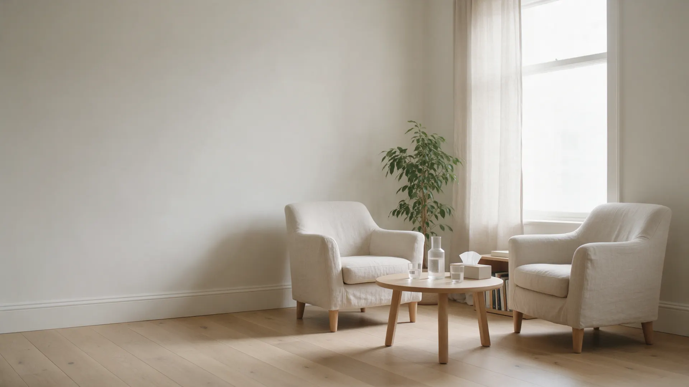
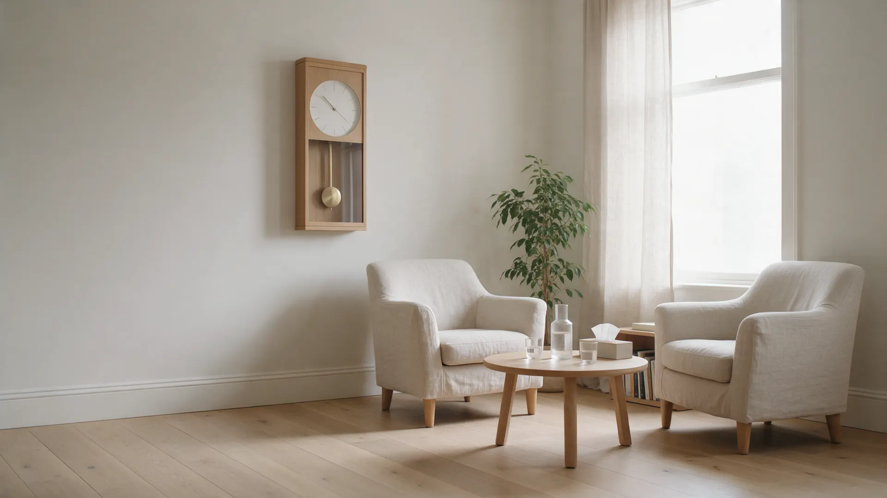
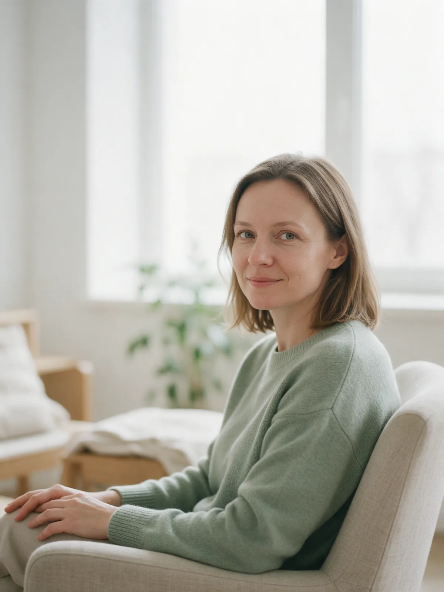
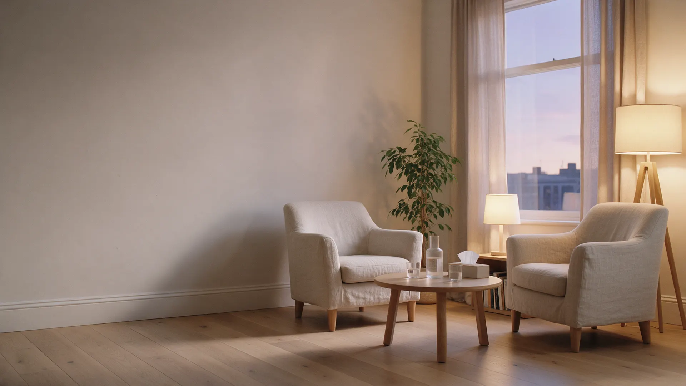

Очно, в кабинете
Тихая комната в Ярославле: ул. Свободы, 10, офис 12. Два кресла, вода на столе, никто не зайдёт посреди разговора.
Стоимость уточнить50 минут


Расскажете, что беспокоит, – я объясню, как можем работать. Очно в Ярославле или онлайн, цена заранее.
Отвечаю на них здесь, чтобы на первую встречу вы пришли спокойнее.

Консультирую взрослых: тревога, выгорание, отношения, сложные периоды жизни
Всё, что вы рассказываете, остаётся между нами. Можно говорить в своём темпе и не отвечать на вопрос, если пока не готовы.
Не нужно заранее формулировать «запрос». Достаточно сказать, что не так, – дальше разберёмся вместе.
«Тревожно, и непонятно почему»
Тревога, беспокойство без видимой причины, напряжение, которое не отпускает даже в отпуске.
Тревога и напряжение«Устала так, что ничего не хочется»
Выгорание, апатия, ощущение, что живёте на автомате и сил хватает только на обязательное.
Усталость и выгорание«Мы ссоримся по одному и тому же кругу»
Отношения в паре и в семье: повторяющиеся конфликты, отдаление, трудные разговоры.
Отношения«Не могу пережить расставание»
Потеря, развод, переезд, смена работы – когда привычная жизнь закончилась, а новая ещё не началась.
Потери и перемены«Не понимаю, чего хочу»
Самооценка, решения, которые откладываются годами, ощущение, что живёте не свою жизнь.
Самооценка и выборОдна встреча длится 50 минут. Формат можно менять: начать в кабинете и продолжить онлайн, если так удобнее.

Тихая комната в Ярославле: ул. Свободы, 10, офис 12. Два кресла, вода на столе, никто не зайдёт посреди разговора.
Из дома, из другого города, в обеденный перерыв. Нужны наушники и место, где вас не услышат.
В своём темпе и с чего угодно. Готовиться и подбирать слова не нужно.
Чтобы стало понятно, что происходит и с чего имеет смысл начать.
Или вы берёте паузу подумать. Решение о продолжении – за вами.
Пришлите их текстом или скриншотами – опубликуем только с согласия клиентов и без фамилий.
Если вашего вопроса здесь нет – задайте его в заявке, отвечу до записи.
Если что-то беспокоит дольше пары недель, мешает спать, работать или общаться с близкими – этого достаточно, чтобы прийти. Не обязательно ждать, пока станет совсем плохо.
Вы рассказываете, что происходит, я задаю вопросы. В конце обсуждаем, как может выглядеть работа, и вы решаете, продолжать ли.
Зависит от запроса. Иногда хватает нескольких встреч, иногда работа идёт дольше. Ориентир обсудим на первой встрече и будем сверяться по ходу.
Для большинства запросов – да. Важно найти место, где вас не услышат, и стабильный интернет. Формат можно менять по ходу работы.
Никто. Содержание встреч конфиденциально, имя и контакты не передаются третьим лицам.
Отвечаю в течение рабочего дня. Можно сразу написать или позвонить.
Метку поставим на адрес кабинета.

Напишите, что беспокоит, – отвечу, предложу время и формат. Решать, приходить ли, будете уже после.